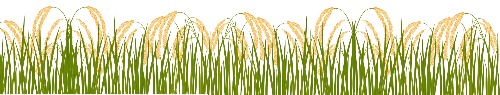
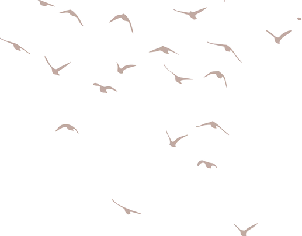

Ragam Budaya Indonesia
Geopark Ciletuh Pelabuhanratu
Geopark Ciletuh Pelabuhanratu terletak di pulau Jawa, di bagian barat Kabupaten Sukabumi, Indonesia. Merupakan geopark yang pertama dan satu-satunya di Jawa Barat. Pada tahun 2018, geopark ini resmi menjadi UNESCO Global Geopark Network. Geopark Ciletuh mengelola kawasannya yang memiliki keragaman geologi, hayati, dan budaya yang sangat melimpah.
Kesepuhan Banten Kidul
Kawasan cisolok merupakan tempat keberadaan Kampung Adat Kasepuhan Banten Selatan, yaitu: Kasepuhan Cipta Gelar, Kasepuhan Sinar Resmi, dan Kasepuhan Cipta Mulya. Hingga saat ini, masyarakat kasepuhan masih melaksanakan tradisi nenek moyang, terutama dalam bidang pertanian serta acara syukuran panen padi yang disebut Seren Taun.Seren Taun bermakna sebagai wahana untuk bersyukur kepada Tuhan Yang Maha Esa atas segala hasil yang dihasilkan pada tahun ini, seraya berharap hasil tani akan meningkat pada tahun mendatang. Penduduk desa menyimpan padi kedalam leuit (lumbung padi) untuk disimpan dalam jangka waktu bertahun tahun tanpa mengalami kerusakan. Hasil panen tidak diperjualbelikan, hanya dipergunakan untuk konsumsi warga kasepuhan dan tamu-tamu yang berkunjung.

Peninggalan Sejarah
Geopark Ciletuh-Palabuhanratu memiliki banyak situs dan bangunan sisa budaya dari zaman megalitik, penjajahan Belanda dan Jepang, serta zaman setelah kemerdekaan. Situs-situs itu tersebar hampir di semua kecamatan yang ada di dalam kawasan geopark.


Peninggalan Sejarah
Geopark Ciletuh-Palabuhanratu memiliki banyak situs dan bangunan sisa budaya dari zaman megalitik, penjajahan Belanda dan Jepang, serta zaman setelah kemerdekaan. Situs-situs itu tersebar hampir di semua kecamatan yang ada di dalam kawasan geopark.